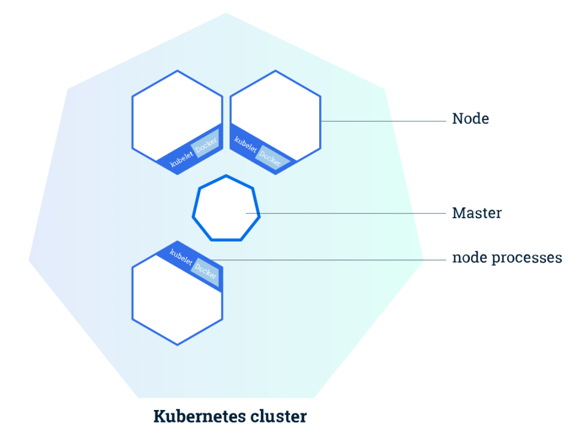
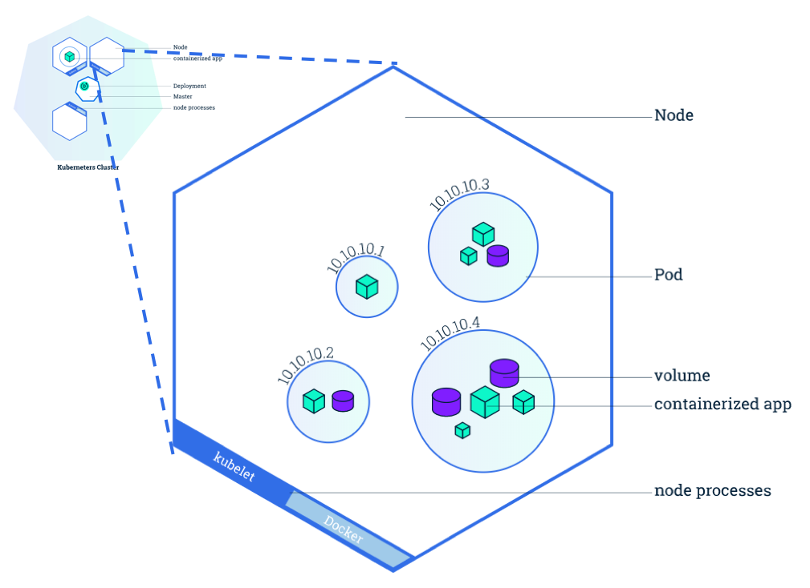
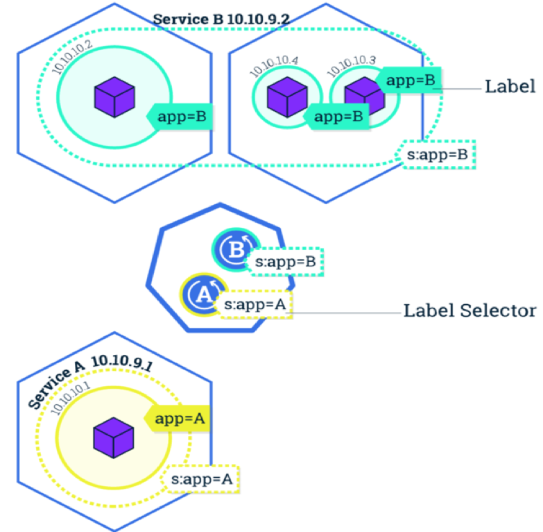
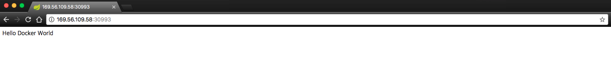
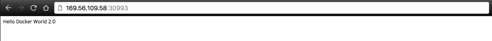

언젠가부터 클라우드 열풍이 불어 닥치고 있습니다.
기술의 변화를 보면 IaaS보다는 PaaS나 SaaS를 선호하고, VM에서 직접 컨트롤 하기 보다는 컨테이너, 서버리스 형태의 기술들이 뜨고 있습니다.
저도 그러한 이유로 작년부터 조금씩 회사에서 Kubernetes 스터디를 하고 있네요.
이번 첫번째 챕터에서는 Kubernetes를 처음 접하는 사용자를 위해 Kubernetes 환경에서 애플리케이션을 배포/접속하고 관리하는 기본적인 방법에 대해 보도록 하겠습니다.
애플리케이션 배포를 진행하기 전에 이해가 필요한 기본 개념입니다.
Kubernetes는 2014년 Google이 시작한 프로젝트로, 애플리케이션 컨테이너의 배포, 스케일링, 오퍼레이팅을 자동화 해주는 오픈 소스 플랫폼입니다.
Kubernetes 내 추상 개념으로, 컨테이너 애플리케이션을 배포, 스케일링, 오퍼레이팅 할 수 있는 단위 환경이 곧 Cluster 입니다. Cluster 는 Master와 Node로 구성되어 있습니다.
Master
- Cluster 전체를 관리하는 주체
- 노드의 글로벌 이벤트를 감지하고 응답하는 등 의사결정을 수행
- 1대 이상으로 구성할 수 있고 일반적인 운영 환경에서는 단일 마스터가 아닌 이중화 또는 삼중화 형태로 구성할 수 있음
- Kube API Server, Controller Manager, Scheduler, etcd 등 여러 모듈로 구성
Node
- VM 또는 실제 머신을 의미
- kubelet이라는 에이전트를 통해 마스터와 통신
- 실제 컨테이너인 Pod가 생성되는 곳

Kubernetes 에서 관리되는 가장 작은 단위입니다.
- Containerized app이 배포되는 컴포넌트
- Strongly coupled 한 관계로 Life-cycle이 일치하는 경우는 복수개의 컨테이너로 구성
- MSA에서는 보통 1개 Container당 1개의 App
- Scaling, Replication 의 단위

애플리케이션의 배포/삭제, scale out 의 역할을 합니다.
Deployment를 생성하면 Deployment가 Pod과 ReplicaSets를 함께 생성합니다.
Pod에 containerized 애플리케이션들이 포함되고, Pod이 생성되면서 애플리케이션이 배포되는 원리 입니다.
ReplicaSets는 replica 수를 지속 모니터링하고, 유지시켜줍니다. 만약 Pod이 삭제되어 replica 수와 맞지 않게 되면 ReplicaSets가 동작하여 지정된 replica 수가 되도록 Pod을 생성합니다.
Pod의 논리적 집합과 액세스 정책을 정의하는 추상화된 개념입니다.
Service object는 software service (예를들면, mysql)에 대해 이름이 부여된 추상 개념입니다.
Service object는 클러스터 내부에서 접근 가능한 port와 외부에서 접근 가능한 nodePort를 가집니다.
이 포트를 통해 요청이 왔을 경우, Service object에 설정된 selector를 이용하여 요청이 전달될 Pod을 찾는데, Service object의 selector 값에 해당하는 label을 가진 Pod 그룹을 찾고 load balancing (기본은 random) 설정에 따라 특정 Pod에 요청이 전달 됩니다.
같은 Cluster 내에서 Pod이 어떤 Node 내 생성되었는지와 상관 없이 Service는 selector/label 방식으로 Pod을 찾을 수 있습니다.
Pod은 생성/삭제되기 쉽습니다. 만약 Pod이 죽게 되면, Replica Sets가 동적으로 Pod을 생성해냅니다. Pod은 Node 내부에서 고유한 IP를 가지는데, Pod이 쉽게 생성/삭제 되는 특성상, 이 IP를 통해 접속하기에 무리가 있습니다.
Kubernetes에서는 이에 대한 안정적인 endpoint를 제공하기 위해 Service object를 생성 및 활용 합니다.Kubernetes의 Service Object는 서비스 디스커버리와 로드밸런싱 기능을 제공하기 때문에 마이크로서비스 아키텍처의 구성 요소 중 하나인 Spring Netflix Eureka를 대신할 수도 있습니다.

Kubernetes에서 애플리케이션 배포를 위해 Docker Image를 사용합니다. 여기서는 제가 Docker Hub에 미리 Push 해놓은 샘플 Image를 활용해 봅시다.
Kubernetes에서 애플리케이션 배포를 위해 Deployment object를 사용합니다.
그리고, 배포된 애플리케이션 서비스 디스커버리 및 접속을 위해 Service
object를 사용합니다.
먼저 Deployment object를 생성해볼까요?
[애플리케이션명]-deployment.yaml 파일 생성
테스트하기 위한 애플리케이션명은 ‘gs-spring-boot-docker’ 입니다.
여기에 suffix로 ‘-deployment’를 추가 하였습니다. suffix는
선택사항으로 필수는 아닙니다. ‘gs-spring-boot-docker’
이름의 애플리케이션에 대한 ‘deployment’ object 생성을 위한
yaml이라는 의미로 gs-spring-boot-docker-deployment.yaml 파일을
생성하였습니다.
yaml 작성 방법을 참고하여 gs-spring-boot-docker-deployment.yaml 파일에 아래의 내용을 작성 합니다.
apiVersion: apps/v1beta2 # for versions before 1.8.0 use apps/v1beta1
kind: Deployment
metadata:
name: gs-spring-boot-docker-deployment
labels:
app: gs-spring-boot-docker
spec:
replicas: 1
selector:
matchLabels:
app: gs-spring-boot-docker
template:
metadata:
labels:
app: gs-spring-boot-docker
spec:
containers:
- name: gs-spring-boot-docker
image: dtlabs/gs-spring-boot-docker:1.0
ports:
- containerPort: 8080
imagePullPolicy: Always
resources:
requests:
memory: "256Mi"
cpu: "200m"
limits:
memory: "1Gi"
cpu: "500m"API Server에서 관리되는 API 버전을 나타냅니다. 사용자가 입력한 apiVersion에 맞는 API를 사용하게 됩니다. Kubernetes API는 실험 단계의 API를 ‘beta’ 형태로 지원하고, 지속 업데이트 하고 있습니다. 따라서 Kubernetes API 공식가이드를 통해 현재 사용자의 Kubernetes 버전 별 호환 및 사용 가능한 API를 확인 후 사용해야 합니다.
현재 yaml이 어떤 object를 생성하기 위함인지 kind에 설정합니다. kind: Deployment 설정을 통해 현재 yaml로 Deployment object를 생성하게 됩니다.
Deployment object 자신의 고유 정보를 입력합니다.
Deployment object에 대한 Unique-key를 입력합니다. 이 name 값을 통해 여러 object 중 해당 name을 갖는 object를 조회할 수 있습니다.
Deployment object에 대한 label을 설정하는데, 복수개의 label 설정이 가능 합니다. object들의 그룹화가 가능하고, 같은 label을 가진 object들을 같은 그룹으로 식별 됩니다.
Deployment object가 수행하는 내용에 대한 설정 입니다.
Deployment object가 ReplicaSets object를 통해 복제해야 할 Pod의 개수를 설정합니다.
Deployment object가 관리해야할 Pod이 어떤 것인지 찾기 위해 selector 정보로 Pod의 label 정보를 비교하고 매칭되는 label을 갖는 Pod들만 관리 대상으로 생각합니다.
Deployment object가 생성할 Pod 관련 설정 입니다.
Pod의 label을 설정하는데, 복수개의 label 설정이 가능 합니다. object들의 그룹화가 가능하고, 같은 label을 가진 object들을 같은 그룹으로 식별 됩니다. 다른 애플리케이션을 위한 Pod과 label이 겹치지 않도록 유의 합니다.
Deployment object가 생성할 Pod에 대한 설정 입니다.
Deployment object가 생성할 Pod이 관리하는 container들의 설정입니다.
container 이름 입니다.
container image name 입니다. docker에서의 image name 및 tag를 입력하는 방식과 같은 방식으로 입력합니다.
containerPort를 배열로 복수개 설정 합니다.
contianer가 사용하는 port에 대한 설정 입니다. 8080 포트를 사용한다고 명시되어 있습니다.
“Always”와 “IfNotPresent”의 설정이 가능 합니다. “Always”인 경우, Remote Registry로 부터 Image를 항상 Download하고, “IfNotPresent”는 우선적으로 캐싱된 Image가 있으면 해당 Image를 사용하고, 없는 경우에만 Remote Registry로 부터 Download를 시도 합니다.
Deployment object yaml 파일 상세 작성 방법은 Deployment 공식가이드를 참고 바랍니다.
컨테이너가 요청할 최소한의 리소스에 대한 설정입니다. Spring Boot 애플리케이션의 경우는 메모리 값을 256M 이상으로 설정해야 합니다.
컨테이너가 최대한으로 사용할 리소스에 대한 설정입니다. 애플리케이션에 따라 적절한 CPU와 메모리 값으로 설정해주어야 합니다. CPU를 너무 낮게 설정하면 애플리케이션이 기동되는데 많은 시간이 걸릴 수 있습니다.
지정된 노드에 Pod를 배포하고 싶은 경우에 참고합니다.
#노드 조회를 통해 노드명 확인
$ kubectl get node
NAME STATUS ROLES AGE VERSION
10.178.158.149 NotReady 15d v1.8.3+icp
10.178.158.172 Ready 15d v1.8.3+icp
10.178.158.177 Ready 15d v1.8.3+icp
10.178.158.181 Ready 15d v1.8.3+icp
10.178.158.186 Ready 15d v1.8.3+icp
#kubectl label nodes = 명령어를 통해 노드에 label 추가
$ kubectl label nodes 10.178.158.181 hostname=10.178.158.181
node "10.178.158.181" labeled
#노드의 라벨 조회
$ kubectl get nodes --show-labels
NAME STATUS ROLES AGE VERSION LABELS
10.178.158.149 NotReady 15d v1.8.3+icp
beta.kubernetes.io/arch=amd64,beta.kubernetes.io/os=linux,gpu/nvidia=NA,kubernetes.io/hostname=10.178.158.149
10.178.158.172 Ready 15d v1.8.3+icp
beta.kubernetes.io/arch=amd64,beta.kubernetes.io/os=linux,gpu/nvidia=NA,kubernetes.io/hostname=10.178.158.172,management=true,role=master
10.178.158.177 Ready 15d v1.8.3+icp
beta.kubernetes.io/arch=amd64,beta.kubernetes.io/os=linux,gpu/nvidia=NA,kubernetes.io/hostname=10.178.158.177,proxy=true
10.178.158.181 Ready 15d v1.8.3+icp
beta.kubernetes.io/arch=amd64,beta.kubernetes.io/os=linux,gpu/nvidia=NA,hostname=10.178.158.181,kubernetes.io/hostname=10.178.158.181,test=test
10.178.158.186 Ready 15d v1.8.3+icp
beta.kubernetes.io/arch=amd64,beta.kubernetes.io/os=linux,gpu/nvidia=NA,kubernetes.io/hostname=10.178.158.186#Deployment 생성 파일에 아래 nodeSelector 필드를 추가
#nodeSelector를 통해 Pod가 특정 노드에서만 실행하도록 제한.
#'hostname=10.178.158.181' 라는 label을 가진 노드를 지정하여 pod를 배포
apiVersion: apps/v1beta2 # for versions before 1.8.0 use apps/v1beta1
kind: Deployment
metadata:
name: gs-spring-boot-docker-deployment
labels:
app: gs-spring-boot-docker
spec:
replicas: 1
selector:
matchLabels:
app: gs-spring-boot-docker
template:
metadata:
labels:
app: gs-spring-boot-docker
spec:
containers:
- name: gs-spring-boot-docker
image: dtlabs/gs-spring-boot-docker:1.0
ports:
- containerPort: 8080
imagePullPolicy: Always
nodeSelector:
hostname: 10.178.158.181Deployment object 생성을 위해 아래의 command를 수행합니다.
# gs-spring-boot-docker-deployment.yaml 파일 위치 확인
$ ls
gs-spring-boot-docker-deployment.yaml
# kubectl apply 명령어에서 -f 옵션을 통해 파일명이 gs-spring-boot-docker-deployment.yaml 임을 인자로 전달합니다.
# --record 옵션을 통해 yaml 설정 이력을 기록할 수 있습니다.
$ kubectl apply --record -f ./gs-spring-boot-docker-deployment.yaml
deployment "gs-spring-boot-docker-deployment" created‘kube apply’ VS. ‘kubectl create –save-config’
Kubernetes에서 object 생성을 위한 기본 명령어는 ‘kubectl create’ 입니다.
하지만, ‘kubectl create’ 동일한 동작을 하고, 더 간결한 방식인 ‘kube apply’를 사용합니다.
그 이유는,
상세 설명은 여기의 kubectl apply 공식가이드를 참고 바랍니다.
# Deployments 조회 (kubectl get deployments 명령어 또는 kubectl get deploy 명령어는 같은 의미이므로 선택적으로 사용 가능)
$ kubectl get deployments
NAME DESIRED CURRENT UP-TO-DATE AVAILABLE AGE
gs-spring-boot-docker-deployment 1 1 1 1 23mDeployment state
NAME - 클러스터 내 Deployment의 이름이 리스트업 됩니다.DESIRED - 개발자가 작성한 Deployment yaml 파일 내 정의한
replicas의 수를 나타냅니다.CURRENT - 현재 Running 중인 replicas의 수를 나타냅니다.UP-TO-DATE - desired state를 만족하기 위해 현재 수행되어지고
있는 replicas의 수를 나타냅니다.AVAILABLE - 현재 User가 사용 가능한 replicas의 수를
나타냅니다.AGE - 애플리케이션이 Running 상태가 된 이후 부터의 시간을
나타냅니다.Pod, ReplicaSets object 생성 또한 확인 가능 합니다.
# ReplicaSets 조회 (kubectl get replicasets 명령어 또는 kubectl get rs 명령어는 같은 의미이므로 선택적으로 사용 가능)
$ kubectl get rs
NAME DESIRED CURRENT READY AGE
gs-spring-boot-docker-deployment-56fb494f67 1 1 1 32m
# Pods 조회 (kubectl get pods 명령어 또는 kubectl get pod 명령어 또는 kubectl get po 명령어는 같은 의미이므로 선택적으로 사용 가능)
$ kubectl get po
NAME READY STATUS RESTARTS AGE
gs-spring-boot-docker-deployment-56fb494f67-g2lwr 1/1 Running 0 33m이어서 Service object 도 만들어 봅시다.
테스트하기 위한 애플리케이션명은 ‘gs-spring-boot-docker’ 입니다. 여기에 suffix로 ‘-service’를 추가 하였습니다. suffix는 선택사항으로 필수는 아닙니다. ‘gs-spring-boot-docker’ 이름의 애플리케이션에 대한 ‘service’ object 생성을 위한 yaml이라는 의미로 gs-spring-boot-docker-service.yaml 파일을 생성하였습니다.
apiVersion: v1
kind: Service
metadata:
name: gs-spring-boot-docker-service
spec:
ports:
- name: "8080"
port: 8081
targetPort: 8080
selector:
app: gs-spring-boot-docker
type: NodePortAPI Server에서 관리되는 API 버전을 나타냅니다. 사용자가 입력한 apiVersion에 맞는 API를 사용하게 됩니다. Kubernetes API는 실험 단계의 API를 ‘beta’ 형태로 지원하고, 지속 업데이트 하고 있습니다. 따라서 Kubernetes API 공식가이드를 통해 현재 사용자의 Kubernetes 버전 별 호환 및 사용 가능한 API를 확인 후 사용해야 합니다.
현재 yaml이 어떤 object를 생성하기 위함인지 kind에 설정합니다. kind: Service 설정을 통해 현재 yaml로 Service object를 생성하게 됩니다.
Service object 자신의 고유 정보를 입력합니다.
Service object에 대한 Unique-key를 입력합니다. 이 name 값을 통해 여러 object 중 해당 name을 갖는 object를 조회할 수 있습니다.
Service object가 수행하는 내용에 대한 설정 입니다.
Service object 에 설정할 포트 정보 입니다.
Service object 에 설정할 포트 중 특정 포트 정보에 대한 명칭 입니다.
Cluster 내부에서 사용될 Service object의 포트 입니다.
Service object로 들어온 요청을 전달할 target이되는 Pod이 노출하고 있는 포트 입니다. Deployment의 spec.template.spec.containers.ports.containerPort에 전달 됩니다. 기본적으로 targetPort는 port 필드와 동일한 값으로 설정됩니다.
Service object가 요청을 전달할 Pod을 찾기위한 검색어 입니다. Pod의 label이 app: gs-spring-boot-docker 인 Pod을 찾아 요청을 전달 하게 됩니다. 찾은 Pod이 여러개인 경우 load balancing 정책에 따라 하나의 Pod을 선택하게 됩니다.
Service object를 노출하기 위한 방식을 설정 합니다. 가능한 type으로는 ClusterIP, NodePort, LoadBalancer가 있습니다.
Service object 생성을 위해 아래의 command를 수행합니다.
# gs-spring-boot-docker-service.yaml 파일 위치 확인
$ ls
gs-spring-boot-docker-deployment.yaml gs-spring-boot-docker-service.yaml
# kubectl apply 명령어에서 -f 옵션을 통해 파일명이 gs-spring-boot-docker-service.yaml 임을 인자로 전달합니다.
$ kubectl apply -f ./gs-spring-boot-docker-service.yaml
service "gs-spring-boot-docker-service" created# Service 조회 (kubectl get service 명령어 또는 kubectl get svc 명령어는 같은 의미이므로 선택적으로 사용 가능)
# 8081이 Service에 접근하기 위한 Cluster 내부 포트, 30993이 외부 노출 포트 입니다. 외부포트는 직접 설정하지 않고 자동 부여된 경우 30000-32767 사이에서 random 부여 됩니다.
$ kubectl get service
NAME TYPE CLUSTER-IP EXTERNAL-IP PORT(S) AGE
gs-spring-boot-docker-service NodePort 10.99.197.147 <none> 8081:30993/TCP 11s접속을 위한 IP / Port 확인
앞서, Service object의 NodePort설정으로 : 의 형태로 접속 테스트가
가능합니다.
아래의 명령어를 통해 NodeIP와 NodePort 정보를 조회합니다. (개인별
테스트 환경에 따라 다른값의 IP, Port가 조회될 수 있습니다)
아래의 내용 중 ‘Node: poc.k8s-worker01.cloudz.co.kr/169.56.109.58’ 이 부분에서 ‘169.56.109.58‘의 IP가 테스트에서 이용할 NodeIP 입니다. 이 방법으로 확인이 어렵다면 Kubernetes 대쉬보드에서 확인해 보거나 Minikube의 경우에는 minikube가 설치된 VM 머신의 IP를 활용하시면 됩니다.
# pod name 알아내기
$ kubectl get pod
NAME READY STATUS RESTARTS AGE
gs-spring-boot-docker-deployment-56fb494f67-g2lwr 1/1 Running 0 3h
# pod name을 이용하여, kubectl describe
$ kubectl describe pod gs-spring-boot-docker-deployment-56fb494f67-g2lwr
Name: gs-spring-boot-docker-deployment-56fb494f67-g2lwr
Namespace: default
Node: poc.k8s-worker01.cloudz.co.kr/169.56.109.58
... (생략)아래의 내용 중 ‘8081:30993/TCP’에서 ‘30993’ 부분이 외부로 노출된 NodePort 입니다.
# Service object 조회를 통해 NodePort를 알아냅니다.
# 8081:30993/TCP 에서 30993이 외부로 노출된 NodePort 입니다.
$ kubectl get svc
NAME TYPE CLUSTER-IP EXTERNAL-IP PORT(S) AGE
gs-spring-boot-docker-service NodePort 10.99.197.147 <none> 8081:30993/TCP 12m
kubernetes ClusterIP 10.96.0.1 <none> 443/TCP 14d브라우저 접속 테스트
위에서 알아낸 169.56.109.58:30993 을 브라우저로 접속하여 정상 접속
됨을 확인 합니다.

Kubernetes에서 소스 수정 및 버전을 업데이트 하는 방법입니다. Docker Hub에 미리 Push 된 샘플 Image를 사용합니다.
kubectl set image 명령어를 통한 Image 버전 업데이트 수행
# deployment/gs-spring-boot-docker-deployment 설정을 통해, deployment object 중 name이 gs-spring-boot-docker-deployment인 것의 Pod Image를 업데이트 하겠다는 의미 입니다.
# gs-spring-boot-docker=dtlabs/gs-spring-boot-docker:2.0 설정을 통해, Image의 name이 gs-spring-boot-docker인 Image를 dtlabs/gs-spring-boot-docker:2.0 라는 Docker Hub/Registry Image로 업데이트 하겠다는 의미 입니다.
# kubectl set image 명령어 수행 시, --record 를 command에 추가 하였다면, kubectl rollout history 수행 결과에서 CHANGE-CAUSE 값으로 업데이트 시 수행한 명령어가 기록되어 보여집니다.
$ kubectl set image deployment/gs-spring-boot-docker-deployment gs-spring-boot-docker=dtlabs/gs-spring-boot-docker:2.0 --record
deployment "gs-spring-boot-docker-deployment" image updatedkubectl set image 명령어를 통해 단일 Pod을 업데이트 하는 경우, 기존의 Pod을 Terminating 후, 신규 Pod을 Running 상태로 변경하는 동안 일정 시간의 서비스 불가 상태를 야기 할 수 있습니다. 이를 방지하기 위해 Pod을 2개 이상 유지하고, rolling update 기능을 통해 Pod의 순차적 업데이트를 수행하는 것이 좋습니다.
Kubernetes에서는 Image의 버전 업데이트 및 배포 시, 과거 버전의 롤백을 위해, 각 버전 별 Revision를 보존합니다. 그리고 Revision 별 Pod의 상태는 Revision 별 생성되는 Replica Sets이 저장하고 있습니다. 그렇기 때문에, 만약 관리자가 업데이트 후 롤백을 시도 할 경우, 보존되고 있는 Revision 중 롤백 버전에 해당하는 Revision의 Replica Sets이 롤백 버전의 Pod을 복구 하게 됩니다.
# 기존 running 상태의 Pod 및 새로 ContainerCreating 중인 Pod 확인
# ContainerCreating 단계는 조회 시점에 따라 skip될 수 있습니다
# Pod의 Unique NAME이 서로 다른 것을 확인할 수 있고, 신규 버전의 Pod이 ContainerCreating 중에도 애플리케이션 이전 버전에 여전히 접속 가능 합니다.
$ kubectl get pod
NAME READY STATUS RESTARTS AGE
gs-spring-boot-docker-deployment-56fb494f67-g2lwr 1/1 Running 0 4h
gs-spring-boot-docker-deployment-7fbf88754d-6grl7 0/1 ContainerCreating 0 1m
# Replica Sets 또한 Revision 보존을 위해 이전 버전의 Replica Sets이 그대로 유지되는 모습을 확인할 수 있습니다.
# Pod이 ContainerCreating 중에는 새로 생성된 Replica Sets의 READY 상태가 '0'으로 업데이트 진행중임을 확인할 수 있습니다.
$ kubectl get rs
NAME DESIRED CURRENT READY AGE
gs-spring-boot-docker-deployment-56fb494f67 1 1 1 4h
gs-spring-boot-docker-deployment-7fbf88754d 1 1 0 1m
################################
# 일정 시간 이후, ContainerCreating(Image 다운로드) 및 업데이트가 완료된 후
################################
# 업데이트가 완료 되면, 아래와 같이 신규 생성된 Pod이 Running
$ kubectl get pod
NAME READY STATUS RESTARTS AGE
gs-spring-boot-docker-deployment-56fb494f67-g2lwr 1/1 Terminating 0 4h
gs-spring-boot-docker-deployment-7fbf88754d-6grl7 1/1 Running 0 9m
# 업데이트가 완료 되면, 아래와 같이 신규 생성된 Replica Sets이 READY 상태가 됩니다.
$ kubectl get rs
NAME DESIRED CURRENT READY AGE
gs-spring-boot-docker-deployment-56fb494f67 0 0 0 4h
gs-spring-boot-docker-deployment-7fbf88754d 1 1 1 9m브라우저 접속 및 버전 2.0으로 업데이트된 것을 확인합니다.

버전 변경 history 확인
kubectl rollout history 명령어를 통해 업데이트 history를 확인할 수 있습니다.
kubectl set image 명령어 수행 시, –record 옵션을 사용했다면, kubectl rollout history 수행 결과에서 CHANGE-CAUSE 값으로 업데이트 시 수행한 명령어 기록을 확인할 수 있습니다.
# deployment/gs-spring-boot-docker-deployment의 의미는, deployment의 이름이 gs-spring-boot-docker-deployment 인 것을 조회하겠다는 뜻 입니다.
$ kubectl rollout history deployment/gs-spring-boot-docker-deployment
deployments "gs-spring-boot-docker-deployment"
REVISION CHANGE-CAUSE
1 kubectl create --filename=gs-spring-boot-docker-deployment.yaml --record=true
2 kubectl set image deployment/gs-spring-boot-docker-deployment gs-spring-boot-docker=dtlabs/gs-spring-boot-docker:2.0
# --revision=2 를 추가하면, 특정 revision 업데이트 정보를 확인할 수 있습니다.
# revision #2에서 Image: dtlabs/gs-spring-boot-docker:2.0를 통해 정상적으로 Image 업데이트가 이루어진 것을 확인 할 수 있습니다.
$ kubectl rollout history deployment/gs-spring-boot-docker-deployment --revision=2
deployments "gs-spring-boot-docker-deployment" with revision #2
Pod Template:
Labels: app=gs-spring-boot-docker
pod-template-hash=3969443108
Containers:
gs-spring-boot-docker:
Image: dtlabs/gs-spring-boot-docker:2.0
Port: 80/TCP
Environment: <none>
Mounts: <none>
Volumes: <none>undo 방식$ kubectl rollout undo deployment/gs-spring-boot-docker-deployment
deployment "gs-spring-boot-docker-deployment" rolled back
# 기존 Running Pod이 Terminating 되고, 신규 생성된 Pod이 Running 되었습니다.
$ kubectl get pod
NAME READY STATUS RESTARTS AGE
gs-spring-boot-docker-deployment-56fb494f67-g2lwr 1/1 Terminating 0 5h
gs-spring-boot-docker-deployment-7fbf88754d-6grl7 1/1 Terminating 0 1h
gs-spring-boot-docker-deployment-56fb494f67-rfvnv 1/1 Running 0 5s
# Revision #1에 해당하는 Replica Sets를 유지키시고 있었기 때문에, 새로 Replica Sets을 생성하지 않고 Rollback이 수행 됨을 알 수 있습니다.
$ kubectl get rs
NAME DESIRED CURRENT READY AGE
gs-spring-boot-docker-deployment-56fb494f67 1 1 1 5h
gs-spring-boot-docker-deployment-7fbf88754d 0 0 0 1h브라우저에서 변경된 버전에 접속하여 Rollback을 확인 합니다. ‘2.0’ 버전에서 아래와 같이 기존 버전(1.0)으로 변경된 것을 확인할 수 있습니다.
–to-revision 방식
특정 Revision을 명시적으로 선택하여 버전을 변경할 경우 사용합니다.
–to-revision 방식을 테스트 하기 위해, 버전 1.0을 2.0이 되도록, Revision #2로 다시 변경 해보도록 하겠습니다.
$ kubectl rollout undo deployment/gs-spring-boot-docker-deployment --to-revision=2
deployment "gs-spring-boot-docker-deployment" rolled back
# 기존 Running Pod이 Terminating 되고, 신규 생성된 Pod이 Running 되었습니다.
$ kubectl get pod
NAME READY STATUS RESTARTS AGE
gs-spring-boot-docker-deployment-56fb494f67-g2lwr 1/1 Terminating 0 5h
gs-spring-boot-docker-deployment-56fb494f67-rfvnv 1/1 Terminating 0 6m
gs-spring-boot-docker-deployment-7fbf88754d-6grl7 1/1 Terminating 0 1h
gs-spring-boot-docker-deployment-7fbf88754d-7zx7s 1/1 Running 0 6s
# Revision #2에 해당하는 Replica Sets를 유지키시고 있었기 때문에, 새로 Replica Sets을 생성하지 않고 Rollback이 수행 됨을 알 수 있습니다.
$ kubectl get rs
NAME DESIRED CURRENT READY AGE
gs-spring-boot-docker-deployment-56fb494f67 0 0 0 5h
gs-spring-boot-docker-deployment-7fbf88754d 1 1 1 1h 브라우저에서 변경된 버전에 접속하여 Rollback을 확인 합니다.
‘1.0’ 버전에서 아래와 같이 ‘2.0’ 버전으로 변경된 것을 확인할 수 있습니다.
Kubernetes object 생성 시, 사용자가 작성한 yaml 파일의 설정 이외에, Kubernetes에서 자동 부여하는 default 설정이 있습니다. 아래의 명령어를 통해 default 설정이 추가된 전체 설정을 확인할 수 있습니다.
$ kubectl get deploy gs-spring-boot-docker-deployment -o yaml이렇게 적용된 설정을 변경할 때, 다음의 명령어들을 사용할 수 있는데, 그 차이점을 명확히 이해하고 사용해야 합니다.
kubectl apply
이 명령어는 ‘kubectl create –save-config’ 와 같은 동작을 합니다. (object 생성 전, ‘kubectl apply -f 파일명’의 명령어 수행을 통해 object 생성이 가능 합니다.)
# gs-spring-boot-docker-deployment.yaml 파일 수정 후 아래의 명령어 수행
$ kubectl apply -f gs-spring-boot-docker-deployment.yamlkubectl edit
전체 설정에 대한 yaml 파일에 대한 형상관리의 어려움 때문에, 자동 부여되는 default 설정 변경시 특히 주의해야 합니다.
# deployment/gs-spring-boot-docker-deployment 를 통해, deployment object 중 name이 gs-spring-boot-docker-deployment 인 설정을 Editor로 open 합니다.
$ kubectl edit deployment/gs-spring-boot-docker-deployment
# Editor 변경 및 저장 시, 설정이 적용 됩니다.kubectl patch
전체 설정(사용자가 작성한 yaml의 설정과 자동 부여되는 default 설정)에 추가 설정 일부를 패치 yaml 파일을 통해 삽입할 수 있습니다.
patch-file.yaml
spec:
template:
spec:
containers:
- name: patch-demo-ctr-2
image: redis# 현재 경로에 patch-file.yaml을 작성한 후,
# deployment 중 name이 gs-spring-boot-docker-deployment인 object에 대해 patch-file.yaml 설정을 추가삽입 하겠다는 의미 입니다.
$ kubectl patch deployment gs-spring-boot-docker-deployment --patch "$(cat patch-file.yaml)"Windows OS에서는 아래의 “$(cat patch-file.yaml)” 명령어가 동작하지 않기 때문에, 아래의 동일한 동작을 하는 다른 방법을 사용 합니다.
> kubectl patch deployment gs-spring-boot-docker-deployment --patch "{\"spec\":{\"template\":{\"spec\":{\"containers\":[{\"name\":\"patch-demo-ctr-2\",\"image\":\"redis\"}]}}}}kubectl replace –force
이 때, ‘kubectl replace –force’를 사용 하는데, 이 경우 서비스가 중단되는 ‘Disruptive updates’가 발생하게 됨을 유의하여 사용 합니다.
############################
# 사용자가 작성한 yaml의 설정을 이용하여 replace 할 경우, 자동 부여되는 default 설정 부분은 일부 변경됨(uid 같이 K8S에서 부여한 식별코드 등)
$ kubectl replace --force -f gs-spring-boot-docker-deployment.yaml
############################
# 전체 설정(사용자가 작성한 yaml의 설정과 자동 부여되는 default 설정)을 이용하여 replace 할 경우 (= 설정을 그대로 유지한 상태로 Pod만 재생성)
$ kubectl get deployment gs-spring-boot-docker-deployment -o yaml | kubectl replace --force -f -Deployment 설정 중, pod template에 해당하는 설정(.spec.template)을 변경하면, Rollout이 발생하고, Kubernetes에서 Revision을 관리 하게 됩니다. 새로운 Revision이 생성되면, 새로운 Replica Sets가 생성되고, 그에 따라 새로운 Pod이 생성 및 Running 된 후, 기존 Revision의 Pod은 Terminating 됩니다.
Kubernetes object의 상세 설명을 보기 위해 사용합니다.
기본 형식
kubectl describe (-f FILENAME | TYPE [NAME_PREFIX | -l label] | TYPE/NAME) [options]
상세 설명 보기
Pod이 어떤 Node에 생성되었는지, Node명과 NodeIP를 알 수 있습니다.(아래의 예시에서 Node: poc.k8s-worker01.cloudz.co.kr/169.56.109.58) 그리고 Pod container에 사용된 Image의 tag를 통해 버전을 확인할 수 있습니다.
# kubectl get pod을 이용하여, 로그를 확인할 Pod의 Name을 알아냅니다.
$ kubectl get pod
NAME READY STATUS RESTARTS AGE
gs-spring-boot-docker-deployment-56fb494f67-g2lwr 1/1 Terminating 0 20h
gs-spring-boot-docker-deployment-56fb494f67-rfvnv 1/1 Terminating 0 14h
gs-spring-boot-docker-deployment-7fbf88754d-6grl7 1/1 Terminating 0 15h
gs-spring-boot-docker-deployment-7fbf88754d-7zx7s 1/1 Running 0 14h
# describe 대상 object가 pod이고, 그 Name이 gs-spring-boot-docker-deployment-7fbf88754d-7zx7s 인 것에 대한 설명을 가져옵니다.
$ kubectl describe pod gs-spring-boot-docker-deployment-7fbf88754d-7zx7s
Name: gs-spring-boot-docker-deployment-7fbf88754d-7zx7s
Namespace: default
Node: poc.k8s-worker01.cloudz.co.kr/169.56.109.58
Start Time: Thu, 07 Dec 2017 19:11:35 +0900
Labels: app=gs-spring-boot-docker
pod-template-hash=3969443108
Annotations: kubernetes.io/created-by={"kind":"SerializedReference","apiVersion":"v1","reference":{"kind":"ReplicaSet","namespace":"default","name":"gs-spring-boot-docker-deployment-7fbf88754d","uid":"a0cd4243-db2...
Status: Running
IP: 192.168.176.145
Created By: ReplicaSet/gs-spring-boot-docker-deployment-7fbf88754d
Controlled By: ReplicaSet/gs-spring-boot-docker-deployment-7fbf88754d
Containers:
gs-spring-boot-docker:
Container ID: docker://785fe1ea6cce6d705f2c7a5f3ec64619988923abb2e82e21575344daf9d8df34
Image: dtlabs/gs-spring-boot-docker:2.0
Image ID: docker-pullable://dtlabs/gs-spring-boot-docker@sha256:2dc3ce60f8dcf25d41a8cae795b38d0c230493a29b70778a9da02efc9fe52d5e
Port: 8080/TCP
State: Running
Started: Thu, 07 Dec 2017 19:11:41 +0900
Ready: True
Restart Count: 0
Environment: <none>
Mounts:
/var/run/secrets/kubernetes.io/serviceaccount from default-token-rshst (ro)
Conditions:
Type Status
Initialized True
Ready True
PodScheduled True
Volumes:
default-token-rshst:
Type: Secret (a volume populated by a Secret)
SecretName: default-token-rshst
Optional: false
QoS Class: BestEffort
Node-Selectors: <none>
Tolerations: node.alpha.kubernetes.io/notReady:NoExecute for 300s
node.alpha.kubernetes.io/unreachable:NoExecute for 300s
Events: <none>Kubernetes에서 애플리케이션 디버깅을 위해 log를 확인할 수 있습니다. -f 옵션을 추가하여, streamed log를 확인할 수도 있습니다.
kubectl logs [-f] [-p] (POD | TYPE/NAME) [-c CONTAINER] [options]
# kubectl get pod을 이용하여, 로그를 확인할 Pod의 Name을 알아냅니다.
$ kubectl get pod
NAME READY STATUS RESTARTS AGE
gs-spring-boot-docker-deployment-56fb494f67-g2lwr 1/1 Terminating 0 20h
gs-spring-boot-docker-deployment-56fb494f67-rfvnv 1/1 Terminating 0 14h
gs-spring-boot-docker-deployment-7fbf88754d-6grl7 1/1 Terminating 0 15h
gs-spring-boot-docker-deployment-7fbf88754d-7zx7s 1/1 Running 0 14h
# kubectl logs 명령어 뒤에 Pod Name을 입력합니다.
$ kubectl logs gs-spring-boot-docker-deployment-7fbf88754d-7zx7s
. ____ _ __ _ _
/\\ / ___'_ __ _ _(_)_ __ __ _ \ \ \ \
( ( )\___ | '_ | '_| | '_ \/ _` | \ \ \ \
\\/ ___)| |_)| | | | | || (_| | ) ) ) )
' |____| .__|_| |_|_| |_\__, | / / / /
=========|_|==============|___/=/_/_/_/
:: Spring Boot :: (v1.5.9.RELEASE)
2017-12-07 10:11:44.558 INFO 1 --- [ main] hello.Application : Starting Application v0.1.0 on gs-spring-boot-docker-deployment-7fbf88754d-7zx7s with PID 1 (/app.jar started by root in /)
2017-12-07 10:11:44.608 INFO 1 --- [ main] hello.Application : No active profile set, falling back to default profiles: default
...
2017-12-07 10:11:50.845 INFO 1 --- [ main] s.b.c.e.t.TomcatEmbeddedServletContainer : Tomcat started on port(s): 8080 (http)
2017-12-07 10:11:50.851 INFO 1 --- [ main] hello.Application : Started Application in 7.797 seconds (JVM running for 9.041)
# -f 옵션을 추가하여, streamed log를 확인할 수도 있습니다.
$ kubectl logs gs-spring-boot-docker-deployment-7fbf88754d-7zx7s -f동작하고 있는 Container 내부 shell 접속이 가능 합니다. -c 옵션으로 특정 container를 지정하여 접속 가능 합니다. 현재 Pod 내 단일 container로 -c 옵션은 주지 않았습니다.
기본 형식
kubectl exec POD [-c CONTAINER] – COMMAND [args…] [options]
shell 접속
# kubectl get pod을 이용하여, 로그를 확인할 Pod의 Name을 알아냅니다.
$ kubectl get pod
NAME READY STATUS RESTARTS AGE
gs-spring-boot-docker-deployment-56fb494f67-g2lwr 1/1 Terminating 0 20h
gs-spring-boot-docker-deployment-56fb494f67-rfvnv 1/1 Terminating 0 14h
gs-spring-boot-docker-deployment-7fbf88754d-6grl7 1/1 Terminating 0 15h
gs-spring-boot-docker-deployment-7fbf88754d-7zx7s 1/1 Running 0 14h
# kubectl exec 명령어와 -it 옵션을 사용하고, command로 /bin/sh을 실행시키면 shell 입력창이 보이게 됩니다.
$ kubectl exec -it gs-spring-boot-docker-deployment-7fbf88754d-7zx7s -- /bin/sh
/ # ls
app.jar dev home media proc run srv tmp var
bin etc lib mnt root sbin sys usr
# 현재 hostname이 Pod Name인 것을 확인할 수 있습니다.
/ # hostname
gs-spring-boot-docker-deployment-7fbf88754d-7zx7s
# shell 접속 종료 시, 'exit' 입력 또는 Ctrl + p, Ctrl + q 입력Kubernetes의 모든 object (Deployment, Service, Pod, Replica Sets, …)를 삭제하기 위해서 공통 적으로 kubectl delete 명령어를 사용합니다. 배포한 애플리케이션을 삭제하기 위해서는, Pod을 delete하는 것이 아니라 Deployment를 delete하는 방식 입니다. Pod을 delete하게 되면 Replica Sets이 설정된 replica 의 수에 따라 Pod을 복원하려 하기 때문입니다. Deployment를 delete하게 되면 관련된 Replica Sets, Pod, Deployment가 모두 삭제 됩니다.
kubectl delete ([-f FILENAME] | TYPE [(NAME | -l label | –all)]) [options]
kubectl delete -f FILE_NAME 방식 : yaml 파일 내 정의된 object에 대한 삭제가 가능 합니다. 특정 디렉토리 내 모든 Kubernetes yaml, json 파일을 대상으로 delete할 수도 있습니다.
# kubectl get deploy(= kubectl get deployment)를 이용하여, 로그를 확인할 Pod의 Name을 알아냅니다.
$ kubectl get deploy
NAME DESIRED CURRENT UP-TO-DATE AVAILABLE AGE
gs-spring-boot-docker-deployment 1 1 1 1 20h
####################################
# kubectl delete OBJECT_TYPE OBJECT_NAME 방식
$ kubectl delete deployment gs-spring-boot-docker-deployment
deployment "gs-spring-boot-docker-deployment" deleted
####################################
# kubectl delete -f FILE_NAME 방식
# 현재 명령어가 수행되는 디렉토리 상의 모든 Kubernetes yaml, json 파일 확인
$ ls
gs-spring-boot-docker-deployment.yaml gs-spring-boot-docker-service.yaml
# -f 를 통해 파일을 이용 하여 delete를 수행합니다.
# 하나의 파일을 이용한 delete는, 'kubectl delete -f xxx.yaml'과 같이 사용 합니다.
# path로 '.' 을 주어 현재 경로에 있는 모든 Kubernetes yaml, json 파일을 대상으로 하도록 합니다. 단, 의도치 않은 파일까지 삭제되지 않도록 주의해야 합니다.
$ kubectl delete -f .
deployment "gs-spring-boot-docker-deployment" deleted
service "gs-spring-boot-docker-service" deleted
# Deployment를 delete하면 관련된 Pod, Replica Sets 또한 모두 삭제 됩니다.
$ kubectl get pod
No resources found.여기까지 Kubernetes 환경에서 애플리케이션을 배포하고 접속, 관리하는 방법에 대해 알아보았습니다. 다음에는 DB나 Redis 등과 같은 Backing 서비스의 연동 방법에 대해 실습해보도록 합시다.